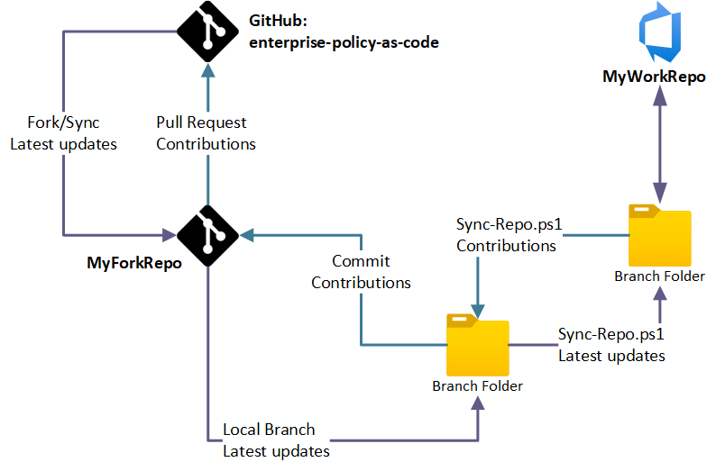

Forking the GitHub Repo - an Alternate Installation Method
Instead of installing EnterprisePolicyAsCode from the PowerShell Gallery, you can clone the GitHub repository and use the scripts described below to install the script source code. This is useful, if your organization has overly restrictive policies on installing PowerShell modules from the PowerShell Gallery. It can also be useful if you want to contribute EPAC source code to the project.
Setting up your Repo
- Initial setup
- Create
MyForkRepoas a fork of GitHub repo. - Create
MyWorkingRepo. 1. Clone your forked repo. 1. Create a new repo from the clone (do not forkMyForkRepo)
- Create
- Work in
MyWorkingRepo- While the root folder is not modified as part of the Sync-Repo process, it is recommended that this part of the file structure not be used for storage of any custom material other than new folders.
- You may add additional folders, such as a folder for your own operational scripts.
- Use only folders
DefinitionsandPipeline, except when working on fixes to be contributed back to GitHub.- Review the
Sync-Repodocumentation for additional information on the folders which are destroyed and recreated as part of the version upgrade process for additional insight on this topic.
- Review the
- While the root folder is not modified as part of the Sync-Repo process, it is recommended that this part of the file structure not be used for storage of any custom material other than new folders.

Syncing latest Version from GitHub repo
- Fetch changes from GitHub to
MyForkRepo. - Execute
Sync-Repoto copy files fromMyForkRepotoMyWorkingRepofeature branch. - PR
MyWorkingRepofeature branch.
Contribute to GitHub
- Execute
Sync-Repoto copy files fromMyWorkingRepotoMyForkRepofeature branch.- Be sure not to copy internal references within your files during your sync to MyForkRepo.
- PR
MyForkRepofeature branch. - PR changes in your fork (
MyForkRepo) to GitHub. - GitHub maintainers will review the PR.
Sync-Repo.ps1
The repo contains script to synchronize directories in both directions: Sync-Repo.ps1. It only works if you do not modify:
Docs,Scripts,ModuleandStarterKitdirectories*.md,*.ps1,*.yml, andLICENSEfiles in repo root directory
| Parameter | Required | Explanation |
|---|---|---|
SourceDirectory |
Required | Directory with the source (forked repo) |
DestinationDirectory |
Required | Directory with the destination (your private repo) |
SuppressDeleteFiles |
Optional | Switch parameter to suppress deleting files in $destinationDirectory tree |
Process for Development (Maintainers Only)
Warning
This is Intended for maintainers only: It documents how to move internal EPAC development (ADO) to production (GitHub).
Assumptions:
- You have completed PR in for EPAC Development in ADO and are ready to release to public GitHub EPAC project.
- You are using known local path names for EPAC Development repo and GitHub repo, for example:
- EPAC Development local repo:
C:\GitRepoClones\epac-development - EPAC GitHub local repo:
C:\GitRepoClones\enterprise-azure-policy-as-code
Sync-FromGH.ps1 and Sync-ToGH.ps1
Sync-FromGH.ps1 and Sync-ToGH.ps1 are a wrapper around Sync-Repo.ps1 used by the EPAC maintainers to simplify syncing their development repo epac-development and the GitHub repo enterprise-azure-policy-as-code.
Syncing latest Version from GitHub repo to epac-development repo
- Create a branch in
epac-development reponamedfeature/sync-from-github - Sync GitHub enterprise main branch with
Sync-FromGH.ps1 - Verify changes
- Commit changes to
epac-developmentbranchfeature/sync-from-github - Test and PR
epac-developmentbranchfeature/sync-from-githubtoepac-developmentmain branch - Delete
epac-developmentbranchfeature/sync-from-github
Development in epac-development repo
- Each developer owns
- Management Group in the
epac-developmenttenant - Folder in the
Testfolder,pipeline.yml, andSet-EnvironmentVariables.ps1in theepac-developmentrepo Set-EnvironmentVariables.ps1in your Test folder is used to set the environment variables for yourTestfolders. This is required for interactively using the scripts.- Create a feature branch in
epac-developmentrepo namedfeature/<your-name>/<github-issue-number> - Make and test changes
- PR
epac-developmentbranchfeature/<your-name>/<github-issue-number>toepac-developmentmain branch - Validate "prod" build in
epac-developmenttenant - Delete branch
feature/<your-name>/<github-issue-number> - Fetch main branch from
epac-developmentrepo - Create a branch in GitHub
enterprise-policy-as-coderepo from the issue you working on. - Fetch that branch in VS Code
- Sync
enterprise-policy-as-coderepo withSync-Repo.ps1from epac-development repo - Commit changes to
enterprise-policy-as-codebranch created above - validate the changes for conflicts
- PR
enterprise-policy-as-codebranch created above to the main branch - Create a release in GitHub
enterprise-policy-as-coderepo - Delete the branch in
enterprise-policy-as-coderepo
Code Promotion Process
Tip
Modify mkdocs.yml after adding markdown files to the Docs folder.
This process is used to promote code from the EPAC Development repo to the EPAC GitHub repo.
- Create a branch in GitHub (https://github.com/Azure/enterprise-azure-policy-as-code).
- Update local production repo with content from local development repo. In local VS code repo for EPAC GitHub, open terminal:
PS C:\GitRepoClones\enterprise-azure-policy-as-code> .\Sync-ToGH.ps1. - Commit changes and sync.
- Go to https://github.com/Azure/enterprise-azure-policy-as-code, go to
Compare and Pull Request - Add PR title and create PR.
- Complete GitHub Review and merge PR process.
- Delete branch from GitHub.
- Go to VSCode for EPAC Release (GitHub) (
C:\GitRepoClones\enterprise-azure-policy-as-code) - In Source Control, select main branch. Move to Remotes and fetch, then sync changes.
- Move to branches, delete local branch (force delete may be required).
- Open terminal, type
git remote prune origin - Verify that the documents have been published.
GitHub Releases
This is a guide on how to release a new version of the project - including automated PowerShell module publish. It is used by the EPAC maintainers only.
- Navigate to https://github.com/Azure/enterprise-azure-policy-as-code/releases
- Click on Draft a new release
- Click on Choose a tag and enter in the new release version - it should be in the format "v(major).(minor).(build)" i.e. v7.3.4 Don't forget the v
- When prompted click on Create new tag: vX.X.X on publish
- Add a release title - you can just use the new version number.
- Click on Generate release notes to pull all the notes in from related PRs. Update if necessary.
- Click Publish Release
- Click on Actions
- Verify that a workflow run has started with the same name as the release.
- Verify that the module has been published to the PowerShell Gallery.